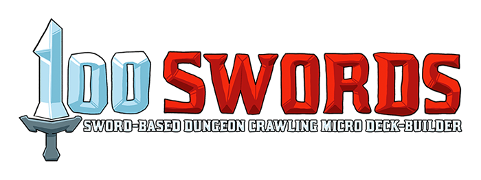
RULES OF PLAY
¡ version 1.3 (season 2 release) ¢
™ rules subject to change £
Quickstart Rules
Just starting out? Click the card to reveal the quickstart rules! ⇒
Follow the setup rules on the reference card provided or see the Setup section below to get the Dungeon prepared for play.
The goal of 100 Swords is to have the cards that are worth most gold when the game ends. The gold value is shown in top right corner of all cards (except rental items, which you don't need to worry about yet).
Each player starts the game with 9 starting items (with a ¡ at the bottom instead of a cost symbol) which make up your personal deck of cards:
- 6x Crappy Swords
- 2x Boots
- 1x Awkward Sword
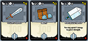
At the start of the game both players shuffle and draw a hand of 5 cards from their deck. During your turn, you will be playing cards for their movement or strength values. In addition, each card in your hand is also worth one energy (more on that in a moment).
First you need to enter the dungeon! Play one or more cards for their movement value (next to the boot icon). You may move up to that many rooms (cards) forward into the the dungeon (but not past revealed monsters or other Impassable cards). You may not move backwards! Move the tracker card below the dungeon cards to keep track of your position. For example...
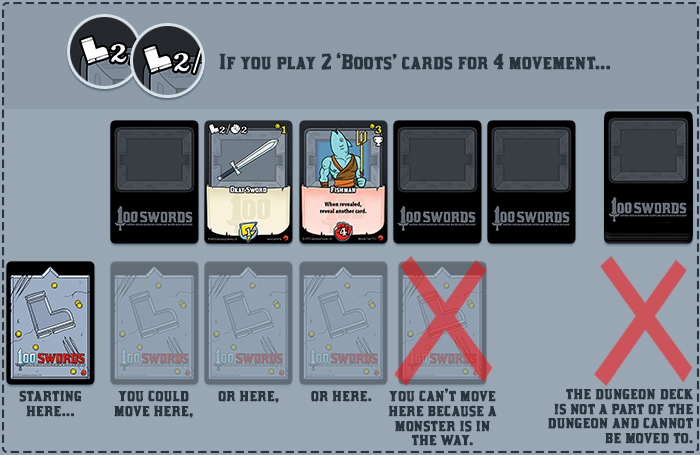
Note: Unused movement, strength, or energy does not carry over to future actions.
Next, you must check the room by picking-up the card and looking at it without showing your opponent. All cards have a cost shown at the bottom of their card, otherwise the text of the card will explain how to remove it from the dungeon. Here's how to deal with what you find:
- If it’s an item ™, you can acquire it by playing cards from your hand sideways as energy until you meet or exceed the energy cost of the item. Each card is worth one energy. Points for strength and movement and also card effects are ignored when cards are played as energy. Place the acquired item directly in your hand!
- If it’s a monster £, reveal it by placing it back in the dungeon face-up. Be sure to consult the monster's effect text, as it may have an effect that triggers when the card is revealed! When first revealed, a monster is surprised; you may move past it or defeat it. If the monster isn’t surprised because it was already revealed, it must be defeated or hidden in order to move to the next room.
You can defeat the monster by playing cards from your hand for their strength value (next to the fist icon) until you meet or exceed the strength cost of the monster. When you remove a card from the dungeon with a trophy icon, place it directly into your trophy pile - a third face-up stack of cards adjacent to your deck and discard (these cards contribute to your gold at the end of the game).
- If it’s an obstacle ¢, reveal it by placing it back in the dungeon face-up. Obstacles explain what they do and how to clear them from the dungeon.
- If a the cost icon shows a lock L, you must play a card with the word “Key” in it’s effect text in order to remove it from the dungeon.
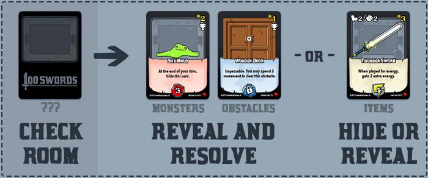
After handling the card in your current room, you may continue using cards from your hand until you are unable or unwilling to move further into the dungeon.
When you’re done, move any cards that remain in hand and any cards played during your turn to your discard. Collapse all of the cards in the dungeon towards the entrance, refill any missing cards (see the Consolidate section of Turn Order for more), and move the tracker card back outside of the dungeon.
Note: Cards played during your turn are played to an active play area until the end of your turn when they are discarded.
At the end of your turn, draw a new hand of 5 cards. If you need to draw a card, and your deck is empty, shuffle your discard and place the cards face-down as your new deck.
The next player many now take their turn, exploring the dungeon from the beginning. Before entering the dungeon, you may rent the rental items from the store by paying their energy cost. Place any rental items that you acquire directly in your hand. Rentals have green borders, an R icon on their upper right, but you must return them to the store at the end of your turn!
Continue taking turns until the card with the 'Boss' attribute is removed from the dungeon or there aren’t enough cards to refill the dungeon to 5 cards. Then players count up the gold in their deck, discard, and trophy piles and whoever has the most, wins! Ties go to the player with the most swords.
A technical note on playing items: When you play an item, the text resolves immediately. It’s mandatory unless it says “may”. If you’re unable to perform the text specified (ex: retire a card from an empty draw pile), you may still use the card’s strength or movement points. When playing multiple cards, resolve any effect text in the order played.
Confused? Continue reading. The rules covered above are discussed in further detail below!
The Basics / How to Win:
In 100 Swords, you and a friend will compete to explore a dungeon, find items, defeat monsters, and get rich. Each turn presents a new puzzle as you navigate the varying cards in your hand, and the ever changing and sometimes hidden cards of the dungeon! Practically everything you find is worth something in gold - and at the end of the game, whoever has the most gold wins! If there's a tie, whoever has the most swords wins! The game ends when the dungeon has less than 5 cards or when the Boss is defeated!
Contents:
- 18 Starting Items ¡
- 12 Crappy Swords
- 2 Awkward Swords
- 4 Boots
- 3 Rental Items R
- 16 Dungeon Items ™
- 13 Monsters £
- 12 Standard Monsters
- 1 Boss
- 3 Obstacles ¢
- 1 Movement Tracker
- 1 Reference Card
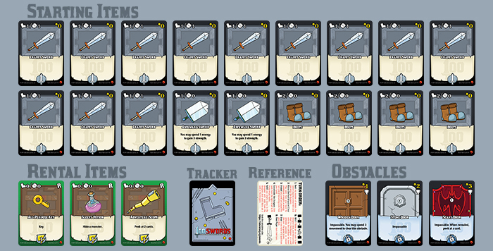
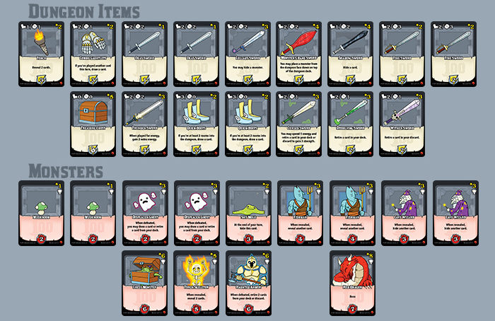
Setup:
-
Set aside the Boss card you wish to use, as well as the movement tracker.
-
Both players will start with a personal deck consisting of 6 'Crappy Swords,' 1 'Awkward Sword,' and 2 'Boots' cards - all of which are marked with the ¡ icon.
-
To the right of each player’s personal deck, make room for their discard. Above those, make room for their trophy pile.
-
Place the 3 rental items (which are easily identified by having green borders and being marked with an R) where both players can reach them.
-
Shuffle all other cards (items, monsters, obstacles) face down to form the dungeon deck.
-
Without looking at them, draw 9 cards from the dungeon deck, add the Boss card to them, and shuffle. Place those 10 cards at the bottom of the dungeon deck.
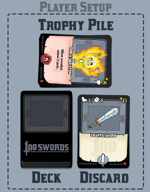
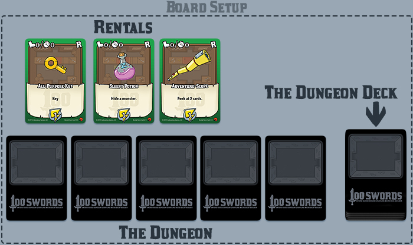
Item Card Description:
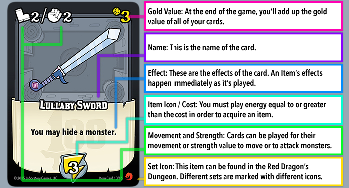
In 100 Swords, not only will you lay the smackdown on some monsters, but you'll be finding and acquiring items as well. As you move through the dungeon, you'll be checking the rooms you end up in - if you check a room and it has an item, you may replace that card in the dungeon face-down (so your opponent doesn’t know what it is) or reveal it.
There are a few types of items in 100 Swords:
-
Starter Items are the cards that make up your starting deck and are identified by a ¡ instead of a ™.
-
Dungeon Items are items you’ll find in the dungeon and acquire by playing energy equal to or greater than their cost while in their room. They're marked by a ™.
-
Rental Items have green borders and an R icon on their upper right. You can acquire them by paying their cost in energy before you step into the dungeon. At the end of your turn, instead of moving rentals to your discard, return all rentals back to their place.
When you play an item for movement or strength, if it has an effect, that effect happens immediately. The order of operations are as follows:
-
Play an item for movement or strength.
-
Perform that item's effects.
-
Spend those points to move deeper into the dungeon or defeat a monster.
If an item has you play a card for energy for an effect, it does not count as spending points and does not zero out your movement or strength.
Players may move on or through revealed items in the dungeon.
When you acquire an item, you must show that item to your opponent. Acquired items are not kept secret.
Playing an Item for Energy:
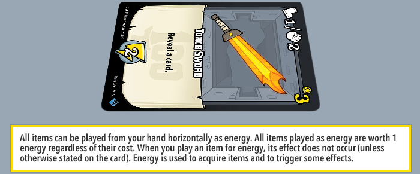
Monster Card Description:
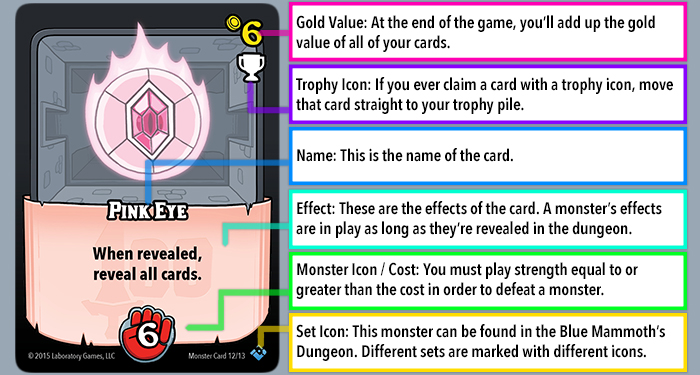
You'll be duking it out with monsters as you explore the dungeon. If you check a room and it contains a monster, that card must be revealed (turned face up).
While moving through the dungeon, you cannot move past a monster that has already been revealed - they're standing vigilant, ready to attack! But if you move to a room with a face-down card and reveal a monster, it is surprised and you may move past it. Once you leave its room, that monster is no longer surprised, and will once again act like a wall.
You may attack a monster the same turn it’s revealed.
You can only attack a revealed monster. If for some reason the monster in your room was hidden after you just revealed it, you cannot attack it.
Obstacles/Locked
Card Description:
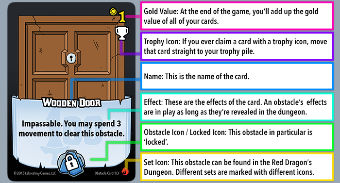
Lastly, you'll be coming across obstacles! If you check a room in the dungeon and it's an obstacle, it must be revealed. You can move past obstacles unless otherwise stated.
Obstacles are cleared (moved to your trophy pile) by fulfilling the requirements written in their effects. They may be cleared for strength or energy, but some may require revealing a type of card, or moving past them, etc.
Locked cards are marked by the L symbol - instead of paying their cost with energy or strength, you must play a card with the 'Key' attribute (written in its effects) while in the locked card's room.
Turn Breakdown:
- Start of Turn
- Rent
- Rent any number of rentals by paying their cost.
- You cannot acquire a rental item once you enter the dungeon.
- Move/Defeat/Acquire/Clear (in any order, as many times as you'd like/can)
- Play one or more cards for their Movement Value and move up to that many rooms from left to right into the dungeon (you can’t move back, you must move from left to right).
- When you move, you must check the room you moved to.
- Play cards for their energy or strength (usually to acquire, defeat, or clear a card).
- You can only acquire, defeat, or clear a card in your room. i.e. in order to acquire an item in the third room of the dungeon, you must move there first.
- Discard anything you played that turn and all remaining cards from your hand. Do not discard any rental items, instead place them back in the rental area.
- Consolidate the dungeon.
- Slide cards from the right to left to fill in any empty rooms.
- Refill any empty rooms in the dungeon with cards from the Dungeon Deck until there are 5 cards in the dungeon.
- If there are no cards in the dungeon deck, and there are less than 5 in the dungeon - or a card with the 'Boss' attribute has been defeated, acquired, or cleared this turn - the game is over.
- Draw a new hand of 5 cards from your deck.
- End of Turn - The next player starts their turn.
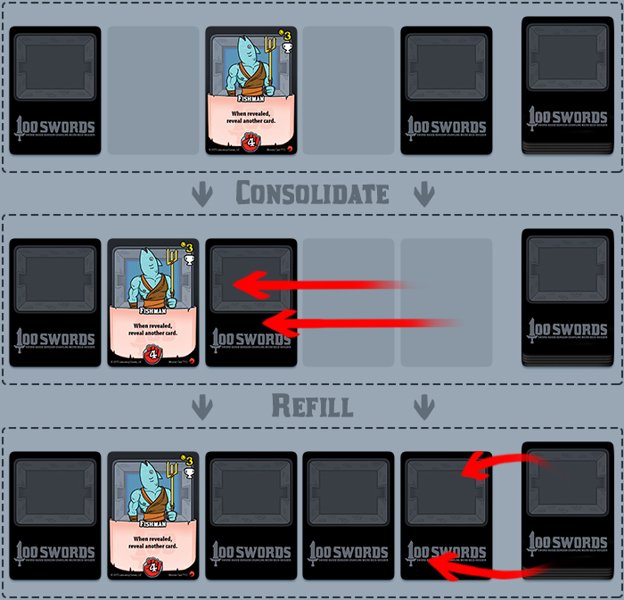
Moving In the Dungeon:
Play as many item cards from your hand as you want for their movement value. You may move up to the sum of the movement of cards played. i.e. if you’ve played two cards for a total of 3 movement points, you may move 1, 2, or 3 rooms into the dungeon. If you have 4 movement points and you only move two rooms, any left over points are reset to zero and don’t carry over to your next movement.
Empty rooms (spaces where cards used to be but were removed for one reason or another) are still considered rooms that must be moved through.
You cannot move backwards, so if you’re in the fifth room of the dungeon and have nothing left you’re able to do, you must end your turn.
You start your turn outside of the dungeon, so you must play at least 1 movement to get to the first room of the dungeon.
Feel free to use the movement tracker to keep track of which room you are in. It’s especially useful in complex or technical turns.
Acquiring Items:
You need to spend energy to acquire items, and you can gain 1 energy for each item you play from your hand horizontally.
If you’re in a room with an item that costs 3 energy, you can play three items for energy to acquire it. Any items played for energy do not trigger their effects unless otherwise stated. Newly acquired cards are drawn into your hand where you may use them that same turn.
Some items have a locked icon instead of an energy cost. A locked item's cost is payed by playing a card with the 'Key' attribute while in its room. When you do, you may acquire the item and draw it into your hand.
If an item card has the trophy icon, when it’s acquired, move it to your trophy pile instead of your hand.
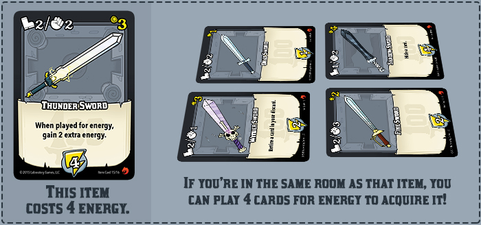
Defeating Monsters:
You can defeat a monster in your current room by playing cards for their strength equal to or greater than the monster’s cost. Defeated monsters are placed in your trophy pile.
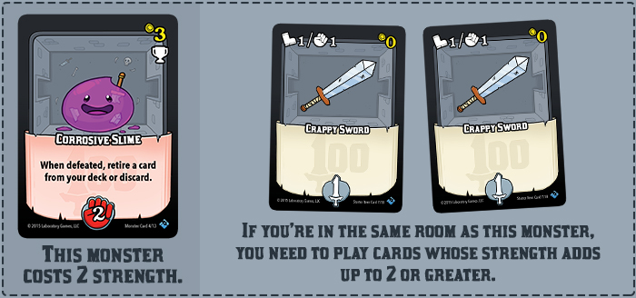
Clearing Obstacles:
Obstacles can take a lot of different forms - they might be doors, pitfalls, shrines, or shops. What they have in common is that they're typically cleared in ways that monsters or items aren't. An obstacle will say how it is cleared on the card. Fulfill its demands and you clear it (it moves to your trophy pile).
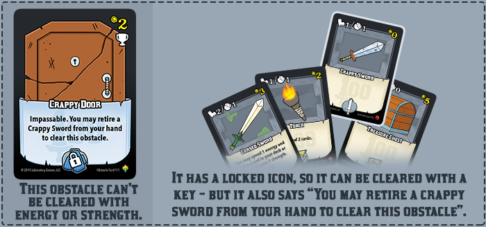
General Rules:
If at any time your personal deck is empty and you need to draw from it (or interact with it in any way), reshuffle your discard pile to replenish your deck.
While in the dungeon, you can only interact with the room you’re in (the card you’ve moved to). You can’t attack something further away or acquire a card that was earlier in the dungeon.
You will play cards (place on the table from your hand) to gain movement points, strength points, and energy points. If you ever spend any type of point in any amount, all types of points are reset to zero - no points are left over.
When you play a card, if it has an effect, you must perform the effect immediately. i.e. If you play a card for 2 movement, and it has an effect, you must do the effect before you move deeper into the dungeon.
If you play a card for energy its effects do not trigger unless otherwise stated.
You cannot play a single card for multiple types of points, it must be played for movement, strength, or energy.
You can only spend points on a single action, you can’t split them between two. i.e. If you use an item that gives you 3 energy, you can’t acquire all three rentals that cost 1 energy each - and if you had 3 energy and rented 1 rental card for 1 energy, you would be back at 0 energy.
All cards played during your turn will move to your discard pile at the end of your turn. If you must replenish your deck in the middle of your turn, do not reshuffle any cards you played that turn into your deck - they'll move to your discard at the end of your turn.
Cards you acquire from the dungeon during your turn without the trophy icon are drawn straight into your hand where you can immediately use them.
If a card has a trophy icon on it, when it’s defeated, acquired, or cleared, it’s moved to your trophy pile instead of your hand.
There should always be five cards in the dungeon at the start of a player’s turn. If that’s impossible (there aren’t enough cards in the dungeon deck), the game is over.
When you play a card with an attribute like 'Key', you may still spend whatever you played it for (movement or strength).
When revealing multiple cards due to the effects of a card, you may reveal any cards in any order, not just from left to right. The order you reveal cards can give you the advantage - think carefully!
When a card says to retire or vaporize a card in your deck or discard pile, first choose where you're retiring it from, then look through your selection for a card to retire. Once you've chosen where you're retiring or vaporizing from, you can't change your selection.
If a card has you look through your deck to find a card for one reason or another, shuffle it before resuming play.
If somehow a starting item ends up in the dungeon, they cost 1 energy to acquire.
Rental items cannot be retired or vaporized.
If a cards effects ever say "Do X and Y to do Z." You must do X and Y to do Z. An example is the Cursed Sword (Red Dragons Dungeon Item Card 6/19) "You may spend 1 energy and retire a card in your discard or deck to gain 3 strength." You must spend 1 energy and retire a card to gain the strength.
Many cards will have text that contradicts these rules. If a card contradicts the rules, follow the text on the card instead.
Like all card games, sometimes the cards can get stacked against you (you may have heard of the term 'mana-screwed'). If the dungeon is handing you a ton of tough monsters and expensive items, you may want a mulligan - if both you and your opponent agree the dungeon is unfair, you may do the following:
- Take all of the cards from the dungeon and draw 5 off the top of the Dungeon Deck.
- Shuffle those 10 cards together.
- Deal out a new dungeon face-down from the 10 cards.
- Place the remaining five cards on top of the Dungeon Deck.
- Reveal the fourth card in the dungeon.
- Resume Play.
Ending the Game:
When a turn ends in which the Boss was defeated, acquired, or cleared; or there aren’t enough cards in the dungeon deck to replenish the dungeon (i.e. there are less than five cards in the dungeon after it’s refilled) the game is over. Each player then counts up how much gold everything they’ve acquired over the course of the game is worth (their trophy pile, deck, and discard) - anything that was vaporized should not be counted. Whoever has the most gold wins! If there’s a tie, whoever has the most cards with the word “Sword” in their name wins. If that’s a tie, whoever has slain the most monsters wins. If that’s a tie, well, you just tied! Congrats! :D
Glossary:
Dungeon Deck: The deck of cards that feeds into the dungeon.
Dungeon: The set of five cards the players explore each turn.
Deck: The personal deck of a player.
Discard: A players personal pile of discarded cards.
Trophy Pile: A players personal pile of trophies (monsters, items, and obstacles).
Draw: To take the top card off of your deck into your hand.
Move: After playing one or more cards for their movement value, you may move up to that many rooms into the dungeon thereby changing the room you're interacting with.
Check: After moving, if the room you moved to contains a face down card, you must look (check) to see what type of card it is. If it’s a monster or obstacle, reveal it. If it’s an item, you may reveal it or keep it hidden (face-down).
Cost: The value on a item, monster, or obstacle that you must pay in order to acquire, defeat, or clear it.
Acquire: Pay the cost of an item and move it to your hand - if it has a trophy icon, move it to the trophy pile. You must show an item you acquire to your opponent.
Defeat: Pay the cost of a monster and move it to your trophy pile.
Clear: Fulfill the requirements of an obstacle and move it to your trophy pile.
Rent: Acquire a rental item by paying its cost.
Peek: Look at a card in the dungeon and place it back face-down regardless of what type of card it is. Cards do not trigger their effects when peeked at. Do not show your opponent any cards you peek at. You may not reveal them.
Reveal: Turn a face-down card in the dungeon face-up.
Encounter: Enter a room with a revealed card. When a card is revealed in your room, it is also considered encountered.
Hide: Turn a face-up card in the dungeon face-down.
Retire: Move a card to your trophy pile. This is a great way to get rid of crappy cards and optimize your deck without losing gold!
Vaporize: Move a card to the vaporized pile face-up (where it is no longer worth gold for any player). These cards are out of play, but some card effects allows you to interact with them.
Swap: Exchange the positions of any specified cards. You may swap a card in a room with an empty room.
Claim: To move the a card to your hand, deck, discard, or trophy pile from an opponent's hand, deck, discard, or trophy pile, dungeon, dungeon deck, or vaporized pile.
Impassable: (Attribute) Cannot be passed while revealed.
Stationary: (Attribute) While consolidating the dungeon, this card remains in it's current room. Move other cards, around it. Additionally, stationary cards cannot be rearranged by card effects which would otherwise allow them to be moved.
Key: (Attribute) Unlock a card in your current room with the locked icon thereby paying its cost and acquiring, defeating, or clearing it.
Unlock: The action of paying a cost with the key.
Boss: (Attribute) When defeated, acquired, or cleared, the game ends once the turn is over.
Mini-Boss: (Attribute) When defeated, acquired, or cleared, it's dungeon and dungeon deck are shuffled and added to the other dungeon deck. Considered to be a "Boss" for the purposes of card effects.
Multi-User Dungeon Expansion (3-4 Players):
Setup:
- Select 2 Dungeons to play.
- Set aside their Bosses and the Mini-boss from the M.U.D.
- Each player starts with a personal deck of 6 ‘Crappy Swords,’ 1 ‘Awkward Sword,’
2 ‘Boots,’ and 1 ‘Mini Torch’ - all of which are marked with the ¡ icon.
- Make room for your deck, discard, and trophy pile.
- To select Rental Items (which are easily identified by having green borders and being marked with an R), use the set number in the bottom right corner of each card (example: Rental Item 1/3). Select a 1, 2, and 3 and put them where players can reach them.
- Shuffle and divide the other M.U.D. cards evenly between the dungeon decks then shuffle each of those decks face down to form 2 dungeon decks.
- Note: For a faster game remove 10 random cards from each dungeon deck before adding the M.U.D. cards.
- Select the Boss you wish to use and turn it face down with the Mini-boss and mix them up.
- Without looking at them, draw 9 cards from each dungeon deck, add 1 of the hidden Boss cards to each of them, and shuffle. Then draw 5 cards from each dungeon deck and place them below the stacks you just shuffled. Place the 15 card stacks back on the bottoms of each dungeon deck.
- Drawing from each dungeon deck, place 5 face down cards in 2 rows within reach - these rows of 5 cards are called dungeons. Each card is a room.
- Between the dungeon decks, make sure there is room for the vaporized pile and the tracker.
- Each player shuffles their deck and draws 5 cards.
- Choose a player to go first.
Play:
Playing the with the M.U.D. Expansion Pack requires very few changes.
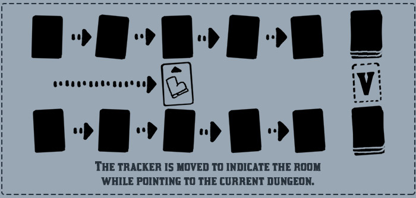
- At the start of your turn, choose which dungeon you wish to enter and rotate the tracker card to point towards the chosen dungeon. Unless otherwise specified, card effects can only refer to cards in the dungeon you've selected to explore.
- Two Dungeons? If there are no cards in a dungeon deck, and there are less than 5 cards in its dungeon - or if a card with the ‘Mini-boss’ attribute has been defeated - then hide any remaining cards in that dungeon, shuffle them with any remaining cards in the current dungeon deck, and place them on top of the other dungeon deck.
- Note: For a faster game place these cards on the bottom of the dungeon deck instead.
- Cards that refer to "your opponent" refer to all opponents in turn order when playing with the M.U.D.
Solo Rules:
Weary Warrior:
Download a printable reference card image!
The Warrior has journeyed long and delved deep, and through her adventures, she has developed an immunity to card effects. In Weary Warrior, after each of your turns, you will play for her using your opponent's deck, discard, and trophy pile.
Before for you begin, replace her Awkward Sword with the Warrior's Sword - if you do not have the Warrior's Sword promo card, you may print one for sleeved cards, or you may treat her Awkward Sword as if it has 1 movement and 3 strength. You will take the first turn, when your turn is over, play a turn for the Warrior while observing the following rules:
- The warrior will attempt to move and clear cards twice on her turn, playing through up to 9 cards of her deck.
- For her first action, draw a card from her deck.
- Move the tracker card the total movement for that card. Stop on any rooms with revealed cards. If she is unable to move because she has drawn a card with 0 movement, end her first action.
- If the room has not been revealed, reveal it. Ignore effects of cards in the dungeon.
- Next she will attempt to acquire, defeat, or clear this card. To do this, you will draw up to four cards from her deck and respond based on the kind of card:
- If the card in the dungeon is an item...
- Add up the total energy costs as you draw the cards. (Starter cards have a cost of 1 energy.)
- If the total meets or exceeds the item's energy cost, she acquires the item to the bottom of her deck.
- If a card was acquired, draw the top card of her deck. If its strength is less than 2, retire that card; otherwise discard it and repeat until you are able to retire a card. If there are no card which can be be retired because they have all been played, shuffle and repeat this process at the end of her turn until a card is retired. If at any time, all of the cards in her deck have a strength of 2 or more, shuffle, and retire the next card. The Warrior never exceeds 9 cards in her deck and discard at the end of her turn.
- If the card is a monster...
- Add up the total strength values as you draw cards. If the total strength meets or exceeds the monster's defeat cost, she defeats it.
- If she is unable to defeat the monster, and the monster is not surprised, end her turn.
- If it’s an obstacle, do not draw cards. She clears it automatically!
- If the card is locked, do not draw cards. She unlocks that card automatically!
- Next she takes a second action, repeating the rules above, however draw up to only three cards, not four while attempting to acquire, defeat, or clear the following card.
- Treat her deck like a player deck: Only shuffle her deck from her discard when she needs to draw more cards.
- At the end of her turn, place the cards played into her discard. It's now your turn again!
- Continue alternating turns with the Warrior. When the game ends, score as normal!
Gold Greed:
These solo rules provide a quick solo game that provide light challenge.
- Set aside room for a new pile of cards, this is your AI opponent's trophy pile.
- Between the Discard and Consolidate turn phases, reveal the leftmost and rightmost cards. When these cards are revealed, they do not trigger any 'when revealed' or ‘when acquired/defeated/cleared’ effects.
- Whichever of the two cards is worth more gold moves to the AI opponent's trophy pile; the other revealed card stays where it is. If they are worth equal amounts of gold, you must choose which moves to the AI opponent's trophy pile.
- The game ends normally.
Optional and
Alternate Rules:
Playing with a Dungeon Builder Set:
If you own a Dungeon Builder Set, the easiest way to play with it is to mix a single DBS with a single Dungeon. Dungeon Builder Sets are a great way to add variety to your game and make it last a little longer. There are currently 2 Dungeons and 4 Dungeon Builder Sets available for purchase, which makes for 8 combination dungeons!
When setting up a Dungeon Builder Set, remove the Boss from the dungeon you’re playing with and choose which Boss you want to use (the original or the one included in the DBS). Then, the only difference is a slight change to step 6 of how the game is setup:
-
Without looking at them, draw 9 cards from the dungeon deck, add the Boss card you chose to them, and shuffle. Then, draw 5 cards from the dungeon deck and place them below the 10 you just shuffled. Place those 15 cards at the bottom of the dungeon deck.
Now you’re ready to play! Mix and match Dungeon Builder Sets and Dungeons to change up the game! Or use cards from multiple sets to build your own dungeons!
Less Memorization:
Some folks don't like having to remember what went where - if that sounds like you, you'll definitely like this optional rule. Use colored tokens (one color per player) to identify which face down cards you’ve seen. If a card ever has both players' tokens on it, remove the tokens and reveal the card.
More solo, optional, and alternate rules to come!
Common Questions and Errata:
As we get questions from players we'll be posting the answers to common ones here. If you have a question, email us!
-
Can you combine two dungeons to make a four player game?
With the release of Season 2, you can combine any 2 dungeon decks with the Multi-User Dungeon Expansion Pack to play with support for 3 and 4 players!
-
What happens if the Boss is vaporized?
A card with the 'Boss' attribute is vaporized the game does not end. At that point, you must continue to explore the dungeon until the dungeon deck runs out and there are less than 5 cards in the dungeon.
-
Are bosses still their card type?
Bosses can be monsters, items, or obstacles - if it says "Boss" in the effects, it's a boss. With that said, rules about its card type still apply. You can walk past an item or obstacle, monsters and obstacles must be revealed, and they can all be hidden with various items.
-
Can you vaporize a card that says it cannot be vaporized while it is hidden in the dungeon?
Yes. Cards that are facedown in the dungeon have no effects. Even if you know what a card is (for example, you've peeked at the card or have hidden it after it was revealed), while it is face down, it must be treated as an unknown card.
-
What does Haunted Armor's (Red Dragon, Monster Card 12/13) effect mean?
"When defeated, retire 2 cards from your deck or discard." What this means is you must retire two cards, and they can be from your deck or discard. You can retire both from your deck, both from your discard, or one from your deck and the other from your discard.
-
Do Shiny Cards like the Shiny Sword (Blue Mammoth, Item Card 17/19) trigger when peeked at?
Shiny cards like Shiny Sword or Shiny Door do not trigger when peeked at because card effects do not trigger when they are peeked at.
-
Search Engine (Magic Computer, Monster Card 3/6) Misprint:
"When defeated, automatically acquire, defeat, or clear the top non-boss card of the dungeon." Should read "When defeated, automatically acquire, defeat, or clear the top non-boss card of the dungeon deck."
-
What does Royal Jelly's (Hive Empress, Item Card 5/6) effect mean?
Both while the card is revealed in the dungeon and when played while you are in the dungeon, you may swap a monster to the room you are in.
Credits:
Created By:
Samuel Strick
Illustrated By:
Samuel Strick
Playtesting:
Ed Turner, Alex Guerrero-Randall, Glenn Shambach, Katie Dow, Aislinn Palmer, Kainoa Cambra, Yoni Skolnik, Colette Isabella, Jeremy Rozenhart
Editing:
Katie Dow, Caylean Fox, Colette Taylor
Design and Development by:
Samuel Strick, Clayton Grey, and Glenn R. Shambach (Gardenin' Elm)
Special Thanks:
Marla and Wesley Strick, Nick Haas, Glenn Shambach, Richard Hensman, Luis Francisco Baroni Coutinho, Aldo Ghiozzi, Dan Yarrington, Luke Crane
And an extra special thanks to the 1,713 Kickstarter backers who made this game a reality!
{kind=link}
{kind=link}